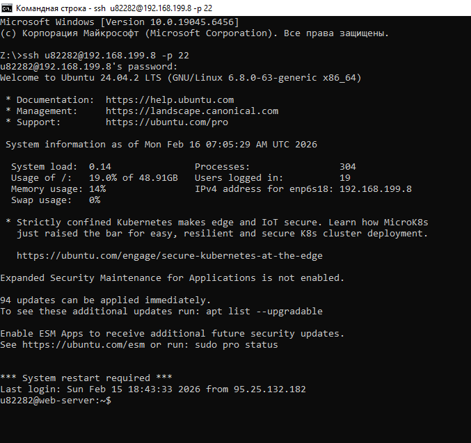
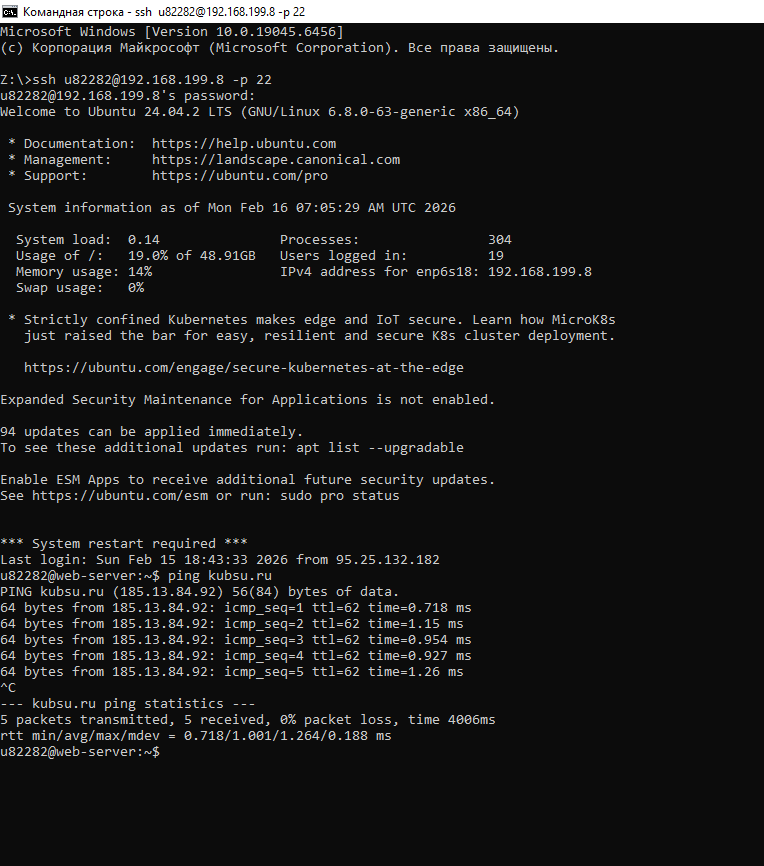
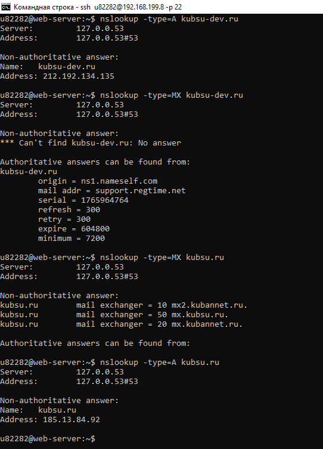
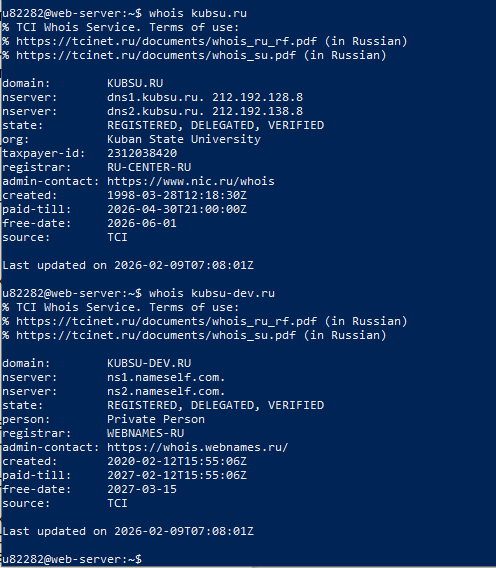
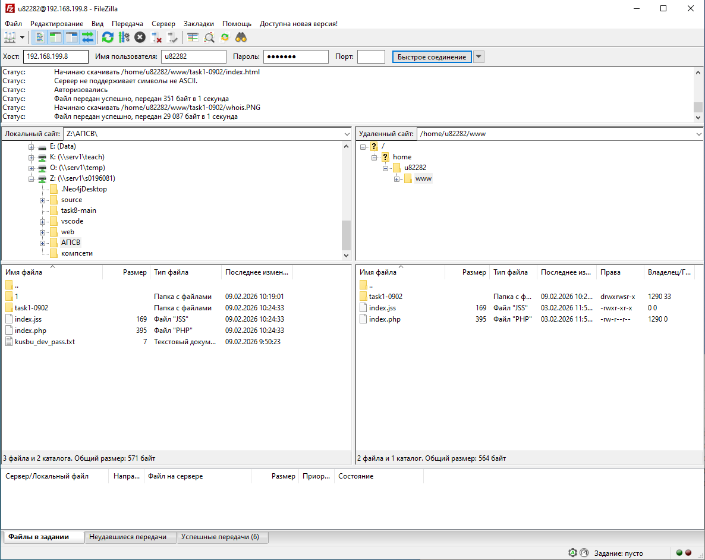

1. Подключение к серверу, расположенному на хосте 192.168.199.8 при помощи протокола ssh командой: ssh <логин>@192.168.199.8 -p 22, где флаг -p - порт
После соединения с сервером для подключения необходимо пройти верификацию при помощи пароля.

2. Проверка наличия соединения учебного сервера с хостом kubsu.ru. Команда: ping <домен>
Команда отображает IP-адрес домена, вес получаемых пакетов и время отклика сервера.

3. Получение A и MX записей доменов kubsu.ru и kubsu-dev.ru при помощи команды nslookup -type=<тип записи> <домен>
флаг -type - тип получаемой записи

4. Получаем информацию о доменах kubsu.ru и kubsu-dev.ru при помощи команды whois <домен>.
Команда позволяет получить сведения об NS-серверах, владельце домена, регистраторе, дате приобретения и дата окончания действия правообладания.

5. Подключение к учебному серверу при помощи программы FileZilla и протокола SFTP. Для подключения необходимо указать хост, логин и пароль, а также порт подключения.
